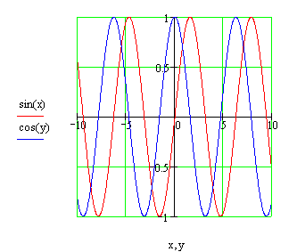

Graphing Multiple 2D Expressions |
You can plot several curves on either an X-Y or Polar Plot by typing a comma between the arguments on each axis or by adding a secondary y axis.
Follow the steps below to graph more than one expression on the primary y-axis (left side) on an X-Y plot:
If you want to create an X-Y plot of sin(x) and cos(y) versus x and y, you type x,y in the middle horizontal placeholder, and sin(x),cos(y) in the middle vertical placeholder. When you click out of the plot, Mathcad displays:

Each trace represents a matched pair of expressions. Each matching pair of expressions should use the same range variable, but the range variable for one pair does not need to match the range variables for the other pairs.
You can graph multiple y-axis (or radial axis on a polar plot) expressions versus one or several x-axis (or angular axis on a polar plot) expressions. Simply enter the appropriate number of related expressions on each axis, separated by commas. If you have different numbers of x and y-axis arguments, they are paired sequentially when creating traces, until the last x argument is reached. At this point, the last x argument applies to all subsequent y traces.